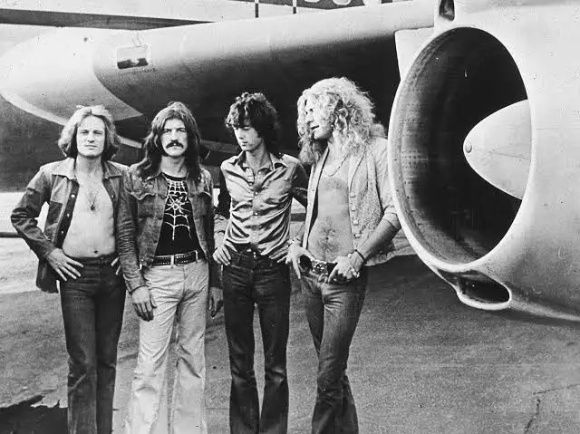
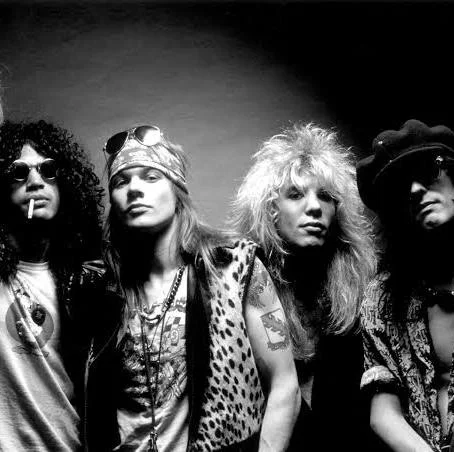

ROCK
Lo stile rock è un genere musicale nato negli anni ’50 negli Stati Uniti e sviluppatosi a partire dal rock and roll, grazie a pionieri come Elvis Presley e Chuck Berry. Nel corso dei decenni è diventato uno dei linguaggi musicali più importanti al mondo, caratterizzato da un suono energico e diretto, in cui la chitarra elettrica ha un ruolo centrale, accompagnata da basso e batteria. Il rock si distingue anche per il suo spirito ribelle e per i temi affrontati nei testi, che spesso parlano di libertà, emozioni forti e critica sociale. Non è solo musica, ma una vera forma di espressione culturale che ha influenzato moda, atteggiamenti e intere generazioni. Artisti come Jimi Hendrix e Freddie Mercury hanno reso questo genere iconico, mentre band più recenti come Arctic Monkeys continuano a mantenerlo attuale con sonorità moderne.
CARATTERISTICHE PRINCIPALI
- Uso della chitarra elettrica
- Ritmo forte e coinvolgente
- Voce intensa ed espressiva
- Struttura semplice ma efficace
SOTTOGENERI DEL ROCK
- Classic rock
- Hard rock
- Punk rock
- Alternative rock
- Progressive rock
TEMI NEI TESTI
- Libertà e ribellione
- Amore e relazioni
- Critica sociale
- Esperienze personali
ALTRI ARTISTI DEL ROCK
- Led Zeppelin

- Guns N'Roses

- Nirvana
- Muse

- Ligabue